The Badniks es una banda tributo argentina dedicada a interpretar en vivo la música de Sonic the Hedgehog, recorriendo desde temas clásicos hasta composiciones modernas. Su show combina arreglos rock/alternativos, secciones potentes al estilo Crush 40 y versiones propias que reimaginan las canciones icónicas de la saga.
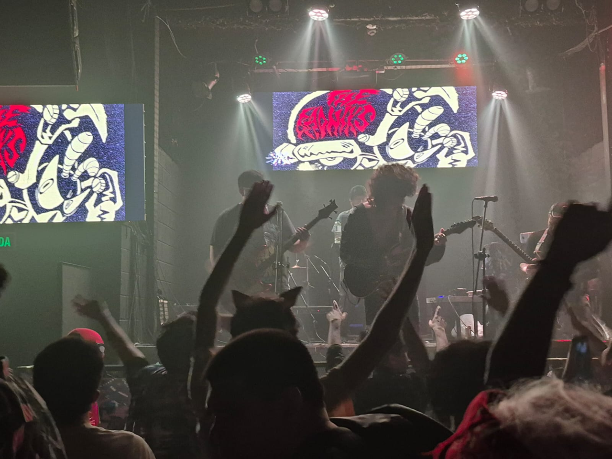
The Badniks es la banda oficial de la Sonic Fest donde han tocado en espacios destacados de la escena argentina como el Club Cultural Matienzo y Uniclub, reconocido por recibir a artistas internacionales.
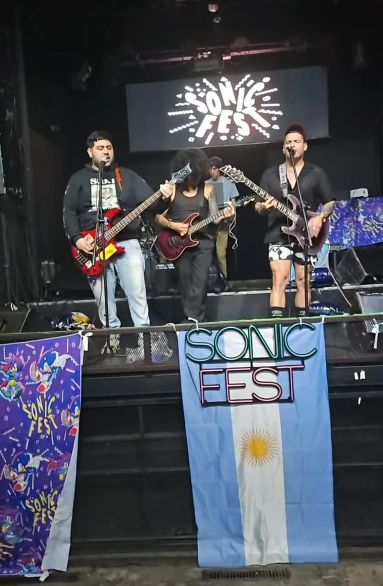
En sus presentaciones tocan clásicos como Escape from the City, Studiopolis / Blue Spheres, Chemical Plant y muchos más, además de publicar contenido y presentaciones completas en YouTube e Instagram.
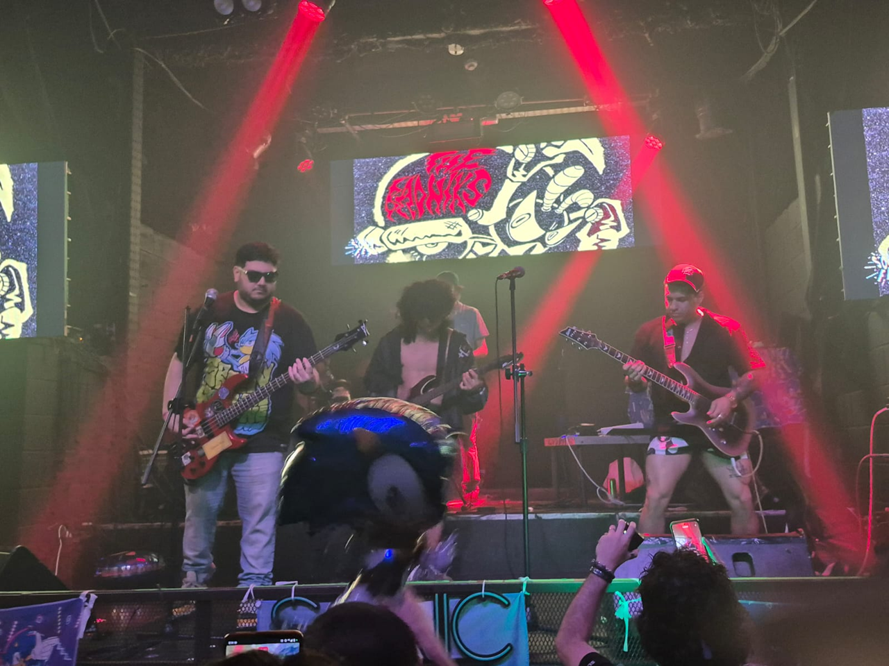
(Hacé click en los títulos para desplegar los videos)
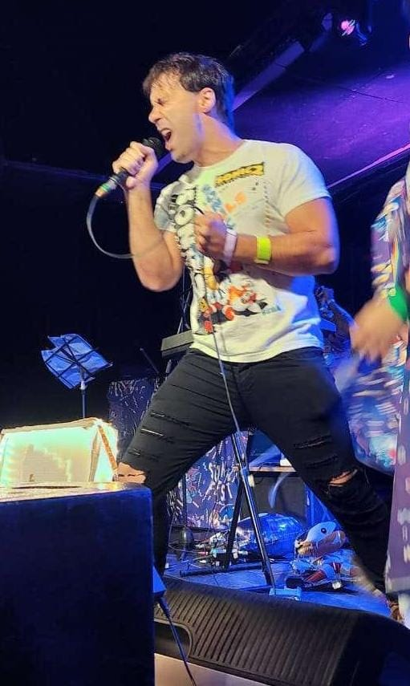
Mi nombre es Leandro y soy el nuevo cantante de The Badniks, influenciado por el Hard Rock de los 80s y las bandas de estadio, siempre trato de hacer un show enérgico y que sea recordado por los espectadores, escucho muchos estilos, como Rock, Heavy metal, pop, disco, funk, soul, jazz, blues, clásico, y más, mientras más música conozca mejor. Estuve cantando con los Badniks desde sus inicios como artista invitado, y cuando me preguntaron si quería formar parte acepte porque me encanta Sonic y uno de mis mayores influencias en la voz es Johnny Gioeli, así que aprovecho para hacer covers de él. Esperó que disfruten de los shows tanto como yo disfruto de hacerlos.
Seguime en:
INSTAGRAM
Organizo la VGA:
VGA
Mi canal de Youtube:
YOUTUBE LEANDRO SANCHEZ CELI
Sobre mí:
LEANDRO CELI
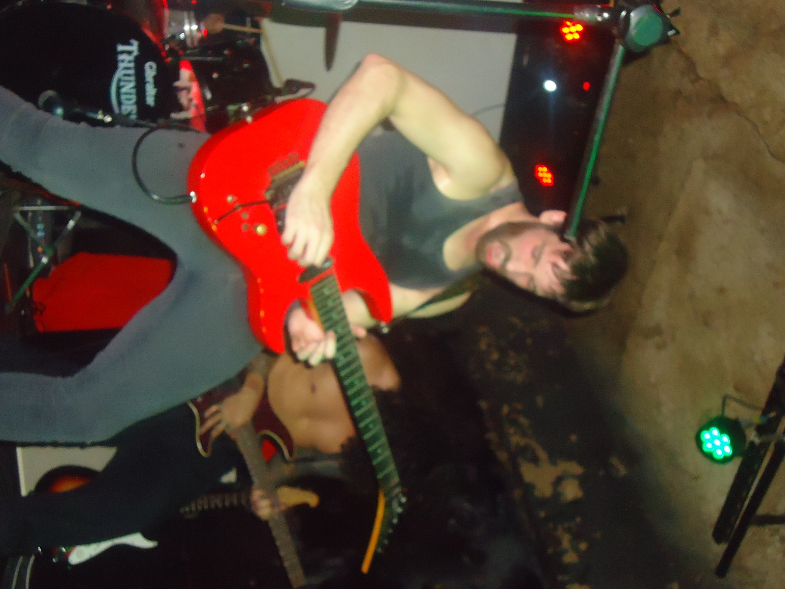
?????????????
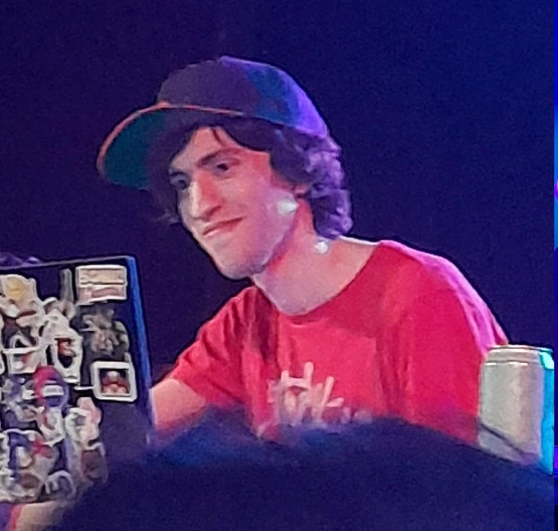
Soy Thiagomii, tecladista de The Badniks. Arranqué haciendo covers de videojuegos retro usando archivos MIDI y una notebook. Con el tiempo me enamoré de la música y me compré mi primer teclado MIDI.
Unirme a The Badniks fue algo súper espontáneo que me ayudó muchísimo a desarrollar cómo tocar en banda, entender la dinámica en vivo y ganar presencia en el escenario. Hoy estoy muy enfocado en mejorar mis composiciones y expandir mis habilidades con distintos instrumentos.
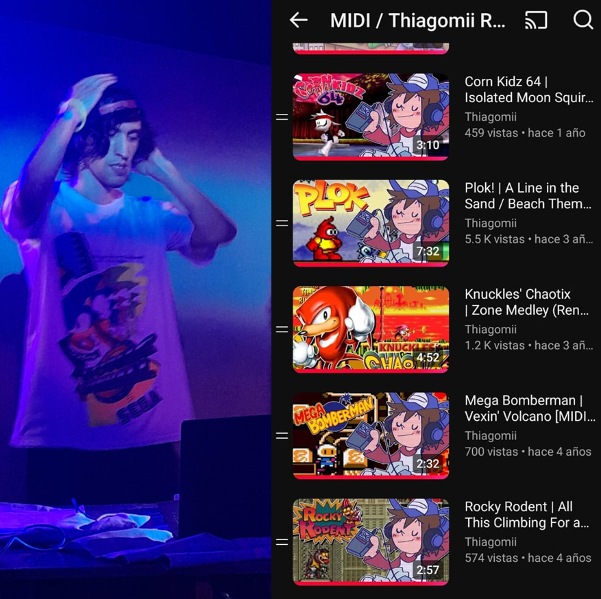
Seguime en:
INSTAGRAM |
YOUTUBE
Sobre mí:
THIAGOMII
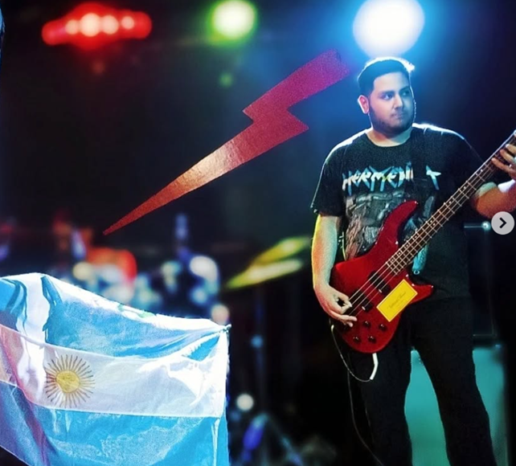
Qué onda wombats, soy Colman, bajista de The Badniks. Arranqué escuchando Deep Purple y Pantera por influencia de mi tío, y después me abrí a todo: jazz, rock progresivo, thrash, black metal… Mi primera banda fue de funk, pero buscaba algo más rápido y agresivo, así que formé Viñas del Thrash con músicos muy zarpados de la escena under.
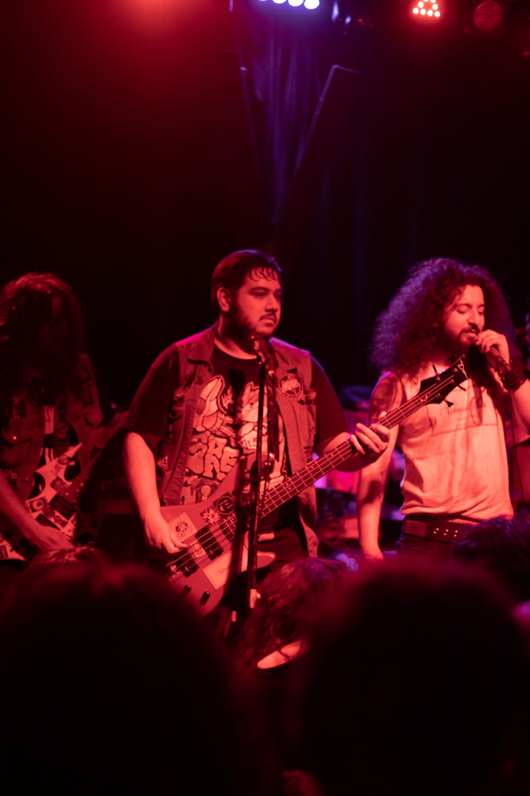
La idea siempre fue la misma: generar locura y gedencia.
Cuando supe que The Badniks buscaba bajista, ni lo dudé. Ya los había visto en un evento y la energía que generaban en la gente era tremenda. Eso es lo que más amo de la música.
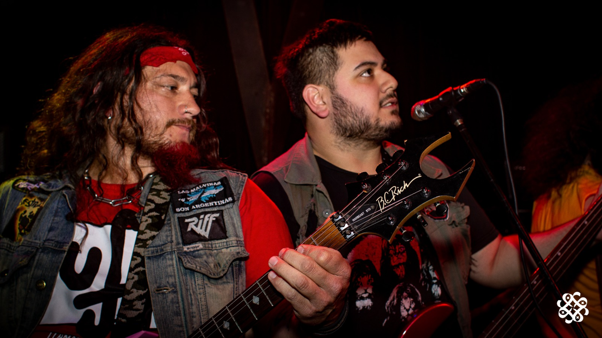
Ya con la banda, consolidamos un sonido agresivo, irreverente y siempre buscando subir el nivel y expandir el show.
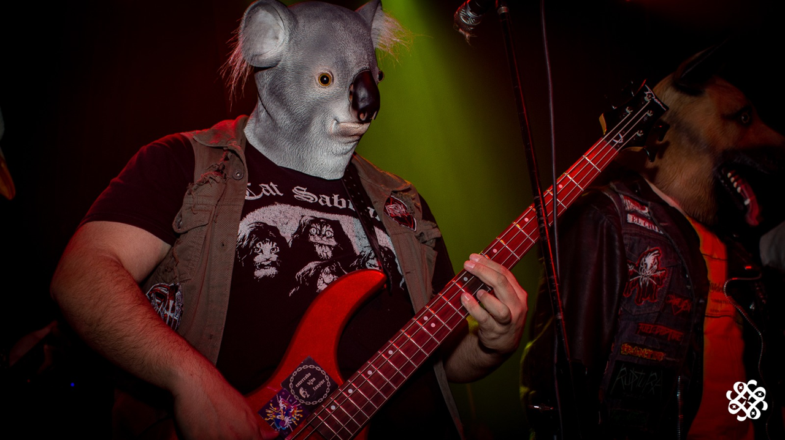
Seguime en:
INSTAGRAM
Escuchá mi banda:
VIÑAS DEL THRASH
Sobre mí:
IVAN COLMAN
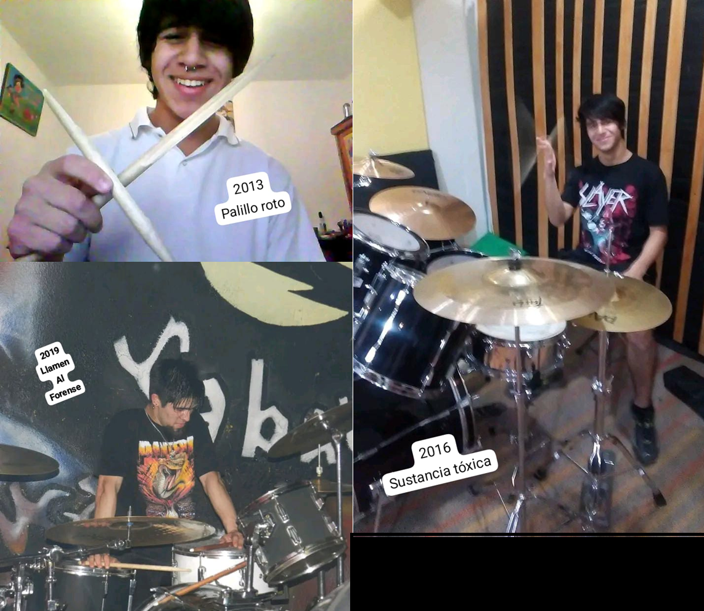
La resiliencia del baterista es amar un armatoste ruidoso, incómodo y hermoso a la vez. Soy Hernán, baterista de The Badniks. Empecé de pibe rompiendo ollas y plásticos con palillos improvisados, hasta que pude estudiar en serio a los 13.
Entre idas y vueltas la batería se volvió mi cable al edén… o al abismo, según el género del tema. Pasé por varios proyectos, pero siempre con pasión, cariño por la música y por ustedes, que nos prestan sus oídos.
Aguante Berazategui, pa. Gracias por acompañarnos.
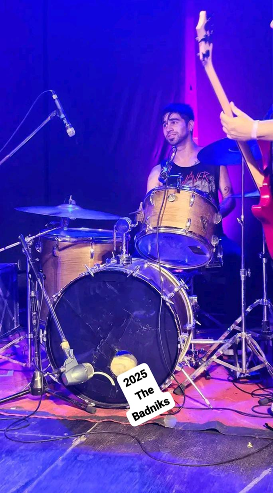
Sobre mí: HERNAN
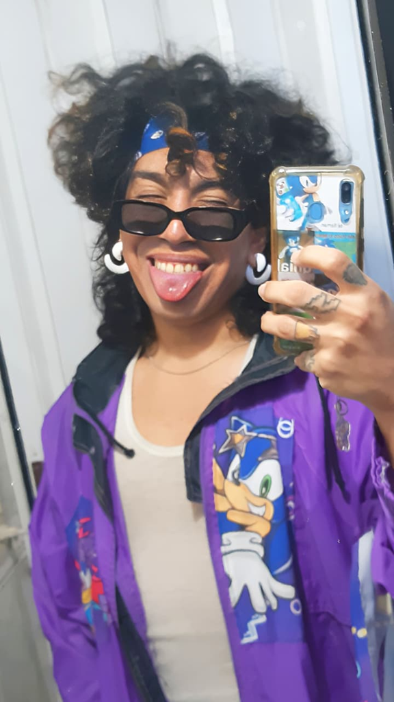
buendía, grupooo, 7 de la tarde a desayunar. en los 90s eso no importaba: uno desayunaba cuando podía y seguía adelante como si nada. soy ferchu, guitarra secundaria de los badniks y un sacadito que deja volar la imaginacion en las bandejas pinchando mucho rick james, ray parker jr entre otros. mi combo secreto es funk + disco + groove, una mezcla tan poderosa que te deja bailando sin depender de otra cosa y sentir la musica.
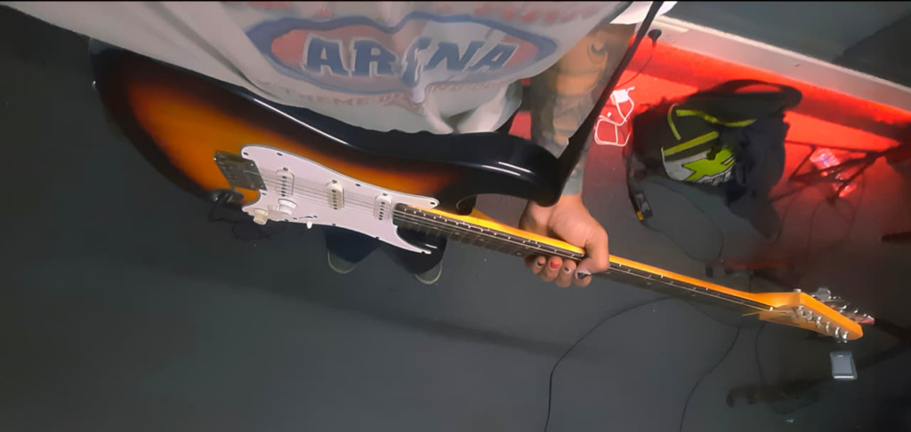
todo empezó a puro estilo noventero, improvisado, inesperado y con fuerte aroma a “esto puede salir muy mal o muy épico”. como ex–miembro de la sonic fest, siempre había un momento donde me trepaba al escenario para tirar algún temita de sonic, como si fuera la nada y ahí encontré a un par de salvajes con la misma energía caótica y listos para hacer ruido conmigo sin pedir permiso y así, entre distorsión, nostalgia y muchas birritas, los badniks terminó apareciendo en cada fiesta diurna como si fuera el invitado especial que nunca confirma asistencia pero siempre cae igual de random para hacer ruido.
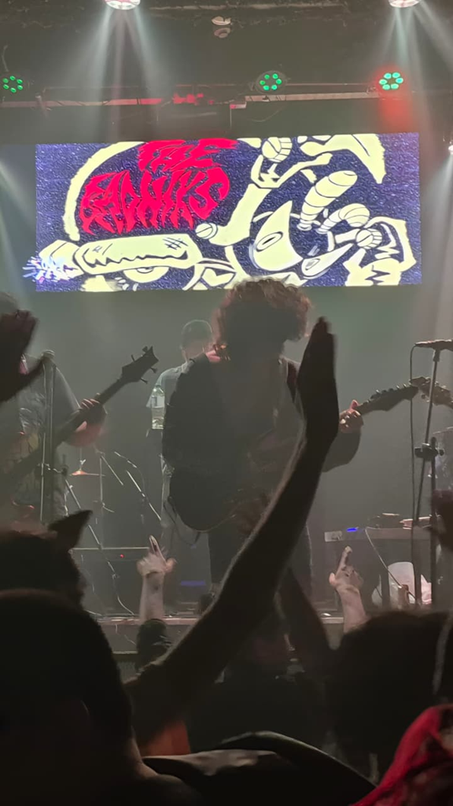
es un honor servir para ustedes. que cada encuentro sea una experiencia inolvidable y llena los mejores temas que puedan escuchar del destello azulado. y si algo sale mal, tranqui en los 90s todo se arreglaba con actitud, un riff y un par de pasos de baile dudosos ah
Seguime en:
INSTAGRAM
Sobre mí:
INSANIK
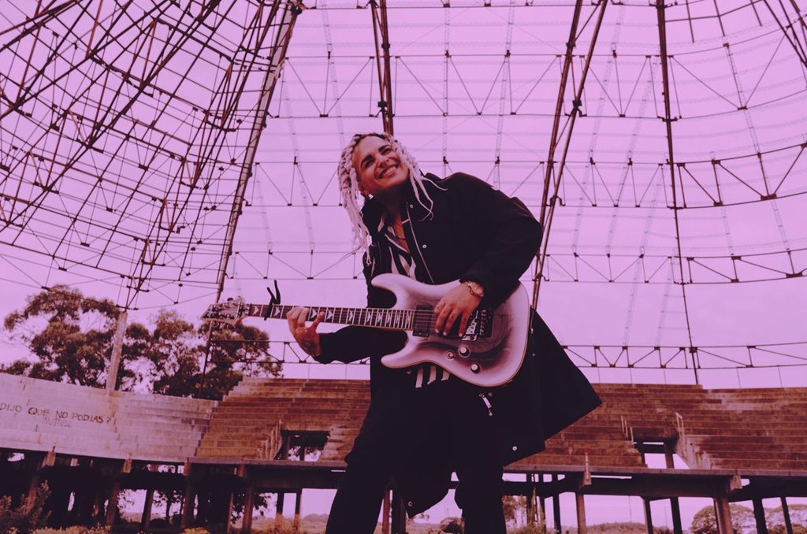
Soy Tin Giovini, guitarrista y cantante de The Badniks. Mi amor por la música nació con los juegos de Sonic. A los 10 años recibí mi primera guitarra en Navidad y desde ese momento no paré.
A los 16 formé mi banda de hardcore punk, Creative Fingers, con la que grabamos 3 EPs. En 2018 me uní a FAKA junto a Juan Fandiño (Flema), donde grabamos Volviendo a las Raíces. Luego seguí mi camino solista, con dos discos publicados (Illumina y Creative Fingers) y un tercero, EÖLÖ, próximo a salir.
Siempre fantaseé con tener una banda de covers de Sonic como hobby paralelo… y después de 16 años tocando esos temas en mi cuarto, finalmente se dio.
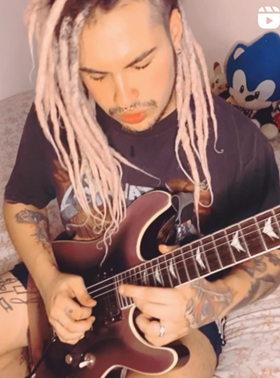
Seguime en:
INSTAGRAM
Sobre mí:
TIN GIOVINI